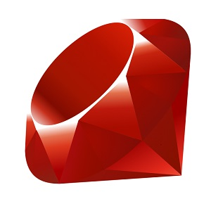
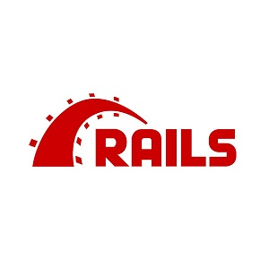
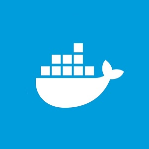
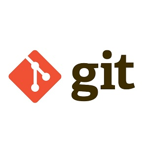

Разработчик
Ruby on Rails




Алексей Золотарев
Место жительства: город Омск
Контактный тел.: +7(951)429-77-77
Skype: occmium
Telegram: @occmium
Email: occkart@yahoo.com
GitHub: github.com/occmium
Personal website: occmium.ru
ОБРАЗОВАНИЕ
Государственное образовательное учреждение высшего профессионального
образования
«Сибирская государственная автомобильно-дорожная
академия» 2004 – 2008 гг.
Специальность: «Автомобили и автомобильное
хозяйство»
Квалификация: «Инженер»
Государственное образовательное учреждение среднего профессионального
образования
«Омский автотранспортный колледж» 2001 – 2004 гг.
Специальность: «Техническое обслуживание и ремонт
автомобильного транспорта»
Диплом с отличием.
ДОПОЛНИТЕЛЬНОЕ ОБРАЗОВАНИЕ
Онлайн-интесив Ruby on Rails «Хороший программист»
2019г.
Квалификация: «Разработчик Ruby on Rails» (сертификат)
Основы программирования в системе «1C:Предприятие 7.7»
на базе предприятия ООО «ИОМЭК» 2005г.
Квалификация: «Администратор» (сертификат)